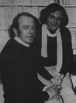

O conceito de território, para a educação integral, vai além do simples espaço físico e inclui as relações que ali ocorrem. Sua compreensão contribui para a formação do sujeito. Dessa forma, a cartografia de um território assume o sentido de método de pesquisa, medida em que leva em conta características, potenciais e desafios espaciais, humanos, políticos, sociais, econômicos e educativos.
No entanto, será que apenas o território pode ser pesquisado? Para a psicoterapeuta e crítica cultural Suely Rolnik (1989), “paisagens psicossociais também são cartografáveis”. Dessa maneira, a cartografia pode ser aplicada a “qualquer fenômeno da existência humana […]: desde os movimentos sociais, formalizados ou não, as mutações da sensibilidade coletiva, a violência, a delinquência… até os fantasmas, inconscientes e os quadros clínicos de indivíduos, grupos e massas, institucionalizados ou não”.
A concepção de Rolnik é inspirada no trabalho do filósofo Gilles Deleuze e do psicanalista Félix Guattari e na proposta do rizoma, formulada pelos dois.
Na Botânica, rizoma é um caule modificado e geralmente subterrâneo que cresce horizontalmente. Dele, nascem caules, raízes e folhas modificadas, além de brotos, bulbos ou tubérculos, que podem se ramificar em qualquer ponto. Grama, bambu, bananeira e orquídea são exemplos de plantas rizomáticas.
Na obra Mil platôs (1995), Deleuze e Guattari se inspiraram nessa estrutura vegetal para propor um novo modelo filosófico para o problema da natureza e da formação do conhecimento humano.
No rizoma “filosófico”, a estrutura do conhecimento é elaborada de forma simultânea, a partir de diferentes elementos, que são múltiplos, heterogêneos e não têm centro nem uma organização hierárquica, de modo que qualquer um pode afetar outro: “Não existem pontos ou posições num rizoma [...]: existem somente linhas [...]. O rizoma conecta um ponto qualquer com outro ponto qualquer e cada um de seus traços não remete necessariamente a traços de mesma natureza [...]; não começa nem conclui, ele se encontra sempre no meio, entre as coisas, inter-ser, intermezzo” (DELEUZE; GUATTARI, 1995).
Esse rizoma todo conectado e descentralizado não pode ser analisado por modelos de pensamento baseados em uma hierarquia, uma estrutura rígida ou a lógica de alguma coisa “gerando” outra coisa. O que fazer, então?
Pensando nisso, Deleuze e Guattari propuseram a cartografia como método de pesquisa ou investigação pela primeira vez. É que, para os autores, o rizoma é “mapa”, “inteiramente voltado para uma experimentação ancorada no real”. O real não é estruturado de maneira perfeita, hierarquizada. Então, o rizoma não pode ser organizado ou pensado nesses termos: só é possível descrevê-lo e pesquisar/investigar suas conexões. Em outras palavras, cartografá-lo.
A cartografia, aliás, nem mesmo se limita a descrever: ela pressupõe que não há separação entre conhecer e fazer, pesquisar e intervir: “Toda pesquisa é intervenção” (PASSOS, 2015).
Essa concepção de cartografia como método de pesquisa e intervenção, que pode até contar com uma construção coletiva, tem impactado diferentes áreas do conhecimento: Psicologia, Comunicação, Música, Ciências Sociais… e Educação.
Seemann (2003), por exemplo, comenta que “muitos autores utilizam o poder da Cartografia e dos mapas como metáforas para criar ‘Cartografias do desejo’ (Guattari e Rolnik, 1999), inventar ‘Cartografias do trabalho docente’ (Geraldi, Fiorentini e Pereira, 1998) ou propor uma ‘Cartografia simbólica’ para sistemas jurídicos (Santos, 2000) ou para as políticas educacionais no Brasil (Seemann, 2001)”.
Saiba mais sobre cartografia como método de pesquisa na entrevista com Julio Neres, do Núcleo de Educação Integral do Cenpec.
No âmbito da Fundação Itaú Social e do Cenpec, a cartografia se faz presente sobretudo no Programa Jovens Urbanos, como um eixo transversal que contribui na concepção educativa do Programa – pautada pelo desenvolvimento integral do jovem e pelo direito à cidade a partir da circulação e apropriação efetiva de espaços e acesso a bens culturais e simbólicos, entre outros aspectos.
Além disso, a investigação cartográfica também norteia o trabalho de articulação nos territórios em que o Jovens Urbanos atua e a estratégia de formação dos educadores e dos jovens.
Afinal, uma vez que as paisagens psicossociais também são cartografáveis, como defende Suely Rolnik, a cartografia reconhece as potencialidades nos territórios e é capaz de ativá-las em processos de formação política e de construção coletiva de conhecimentos sobre as realidades locais: ela pode acionar a memória e mobilizar saberes e desejos para a formulação de projetos de vida.
Leia o texto “A cidade vista por cartografias” de Maria Julia Azevedo Gouveia, que integra o caderno temático do Cenpec.
Referindo-se à definição clássica de Cartografia, o Instituto Brasileiro de Geografia e Estatística (IBGE) propõe uma diferenciação entre cartografia e mapeamento.
Segundo o IBGE, a Cartografia, enquanto ciência, técnica e arte, pressupõe um processo cartográfico, que parte da coleta de dados e “envolve estudo, análise, composição e representação de observações, fatos e dados pertinentes a diversos campos científicos associados à superfície terrestre”. Por sua vez, o mapeamento é simplesmente a aplicação desse processo sobre uma coleção de dados ou informações, com a proposta de gerar a representação gráfica.
Com base nisso, cabe perguntar se a cartografia, quando entendida como método de pesquisa e intervenção, tem necessariamente como meta ou produto final o “mapeamento”, ou seja, a criação de uma representação gráfica – como um diagrama, fluxograma, desenho esquemático ou “mapa” que se assemelhe aos convencionais.
A resposta é não. Na verdade, o mais importante é justamente o processo de investigar. “A cartografia é um método [...] que visa acompanhar um processo, e não representar um objeto. Em linhas gerais, trata-se sempre de investigar um processo de produção”, explica Virgínia Kastrup (2015), doutora em Psicologia Clínica pela Pontifícia Universidade Católica de São Paulo (PUC-SP).